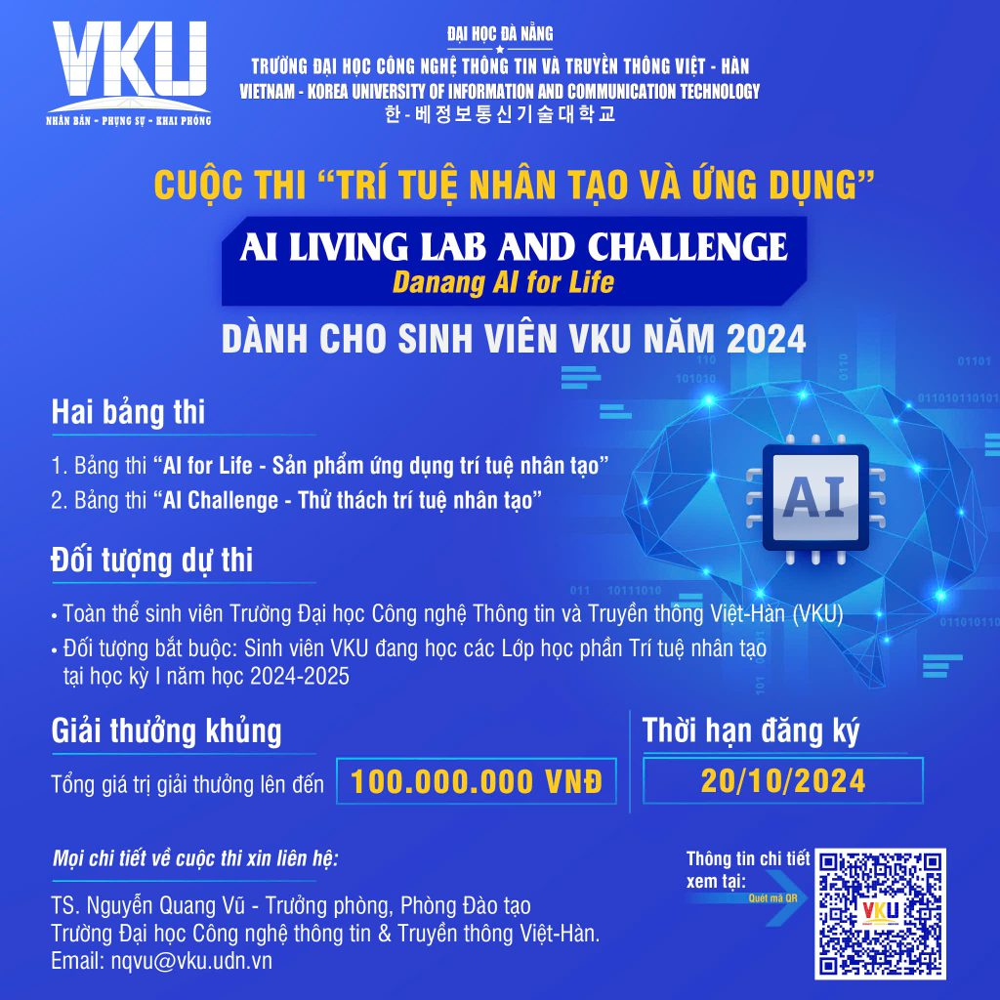
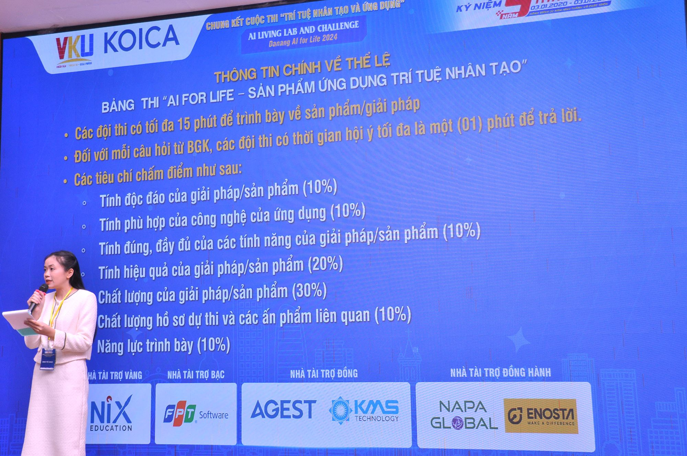
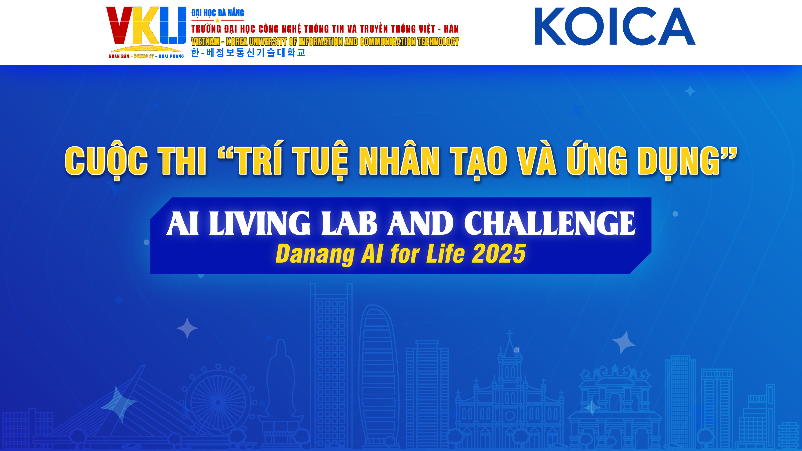
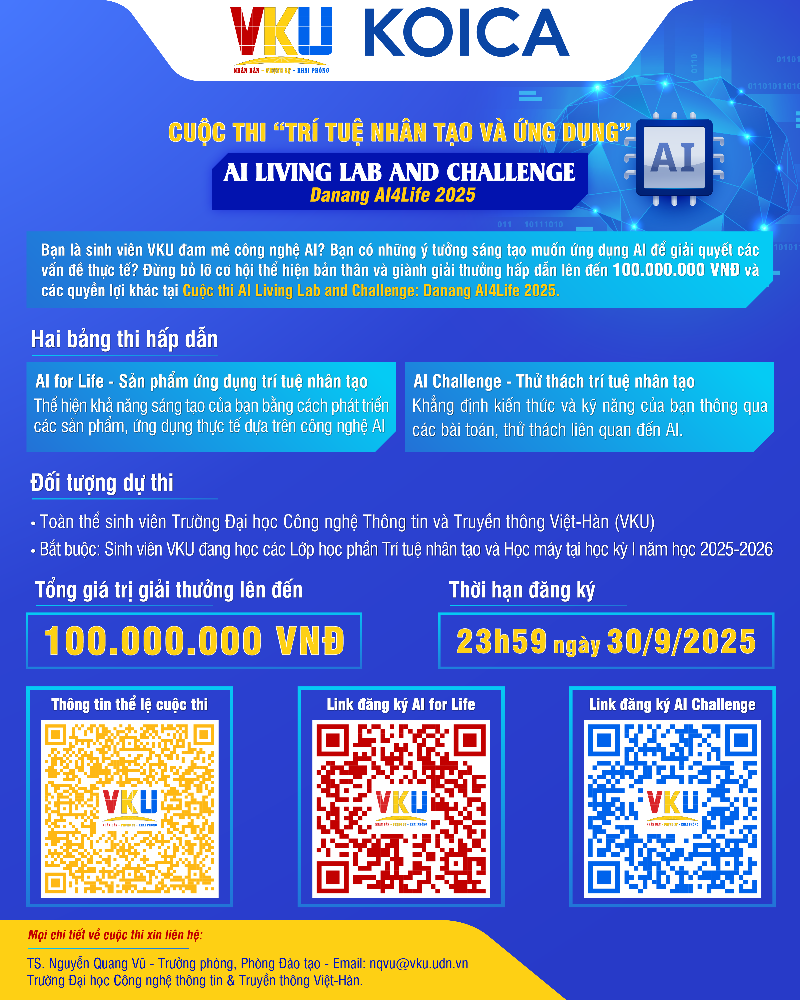
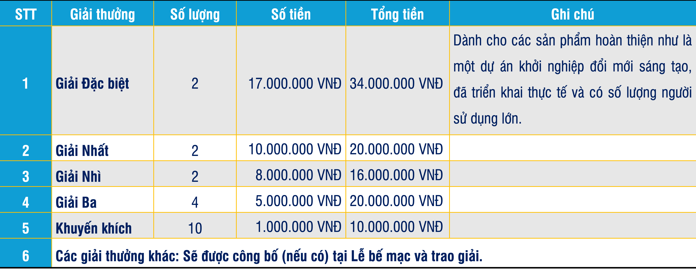
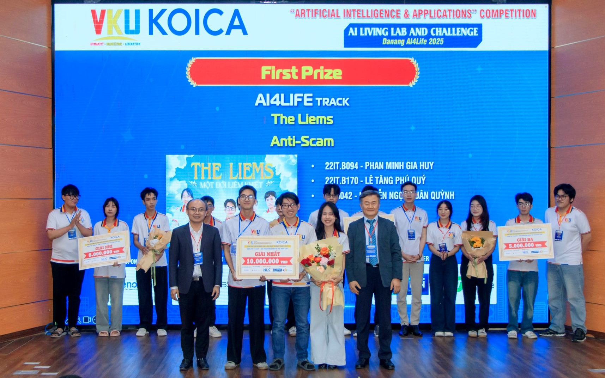
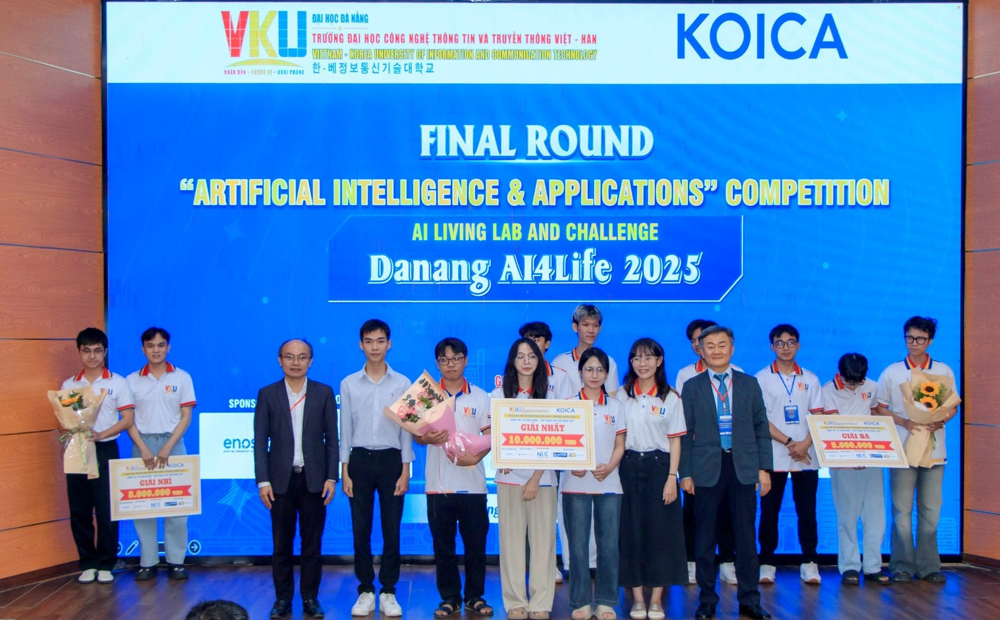
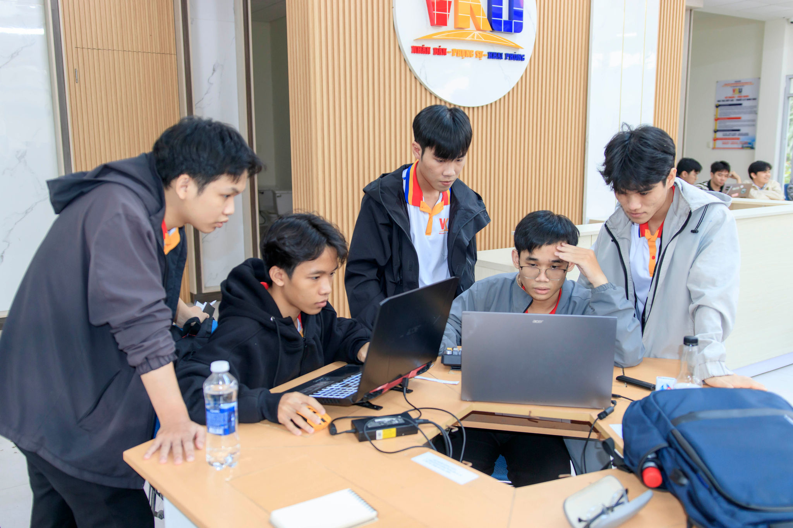

Mùa 2024
Poster giới thiệu mùa 2024
Tham khảo khối tiêu đề, mảng xanh và cách phân hai bảng thi; thông tin đăng ký trong ảnh thuộc mùa 2024.
8 ảnh/ấn phẩm mùa 2024–2025 và logo VKU. Đây là danh mục tư liệu để nghiên cứu thiết kế, không phải website cuộc thi 2026.

Tham khảo khối tiêu đề, mảng xanh và cách phân hai bảng thi; thông tin đăng ký trong ảnh thuộc mùa 2024.

Tham khảo hệ thống tiêu đề và phân khối; đây là ảnh chụp sự kiện, không phải tệp thiết kế gốc.

Tham khảo dải logo sáng, xanh/cyan, tiêu đề vàng, nhãn navy và đường nét kiến trúc; không dùng như banner mùa 2026.

Tham khảo nhịp nội dung dọc và hai bảng thi. Chưa xác minh đây là standee hoặc biết kích thước in.

Tham khảo phân cấp số và nhãn giải. Số tiền và cơ cấu mùa 2025 không áp dụng mặc định cho 2026.

Tham khảo nhận diện thực tế trên sân khấu; nếu hiển thị trên website phải ghi đúng mùa 2025.

Tham khảo hình ảnh hoạt động, trang phục và sân khấu; không gắn thành kết quả mùa 2026.

Ảnh sinh viên làm việc trên máy tính; không phải file banner hoặc sơ đồ hội trường.
Logo VKU: Mở tệp gốc. Container SVG chứa PNG nhúng; năm thư mục nguồn không phải năm thiết kế logo.
Ảnh được giữ nguyên. Các link nguồn cần Internet; ảnh trong thư mục xem được offline. Danh mục này dùng font hệ thống để hoạt động độc lập; frontend cuối cùng dùng Inter theo prompt.